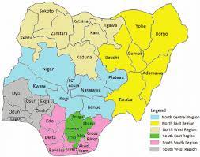
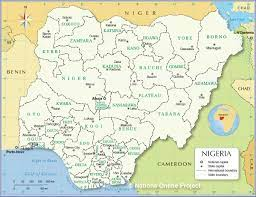
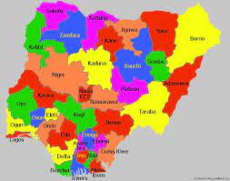

Nigeria is a country on the coast of West Africa, bordered in south by the Bight of Benin and the Bight of Biafra (Bight of Bonny), both part of the Gulf of Guinea, by Niger in north, Benin in west, Cameroon in south east, and by Chad in north east by a boundary across Lake Chad. The nation shares maritime borders with Equatorial Guinea, Ghana, and São Tomé and Príncipe.With an area of 923,768 km² the country is more than three times the size of Italy or slightly more than twice the size of the U.S. state California. Nigeria's main rivers are the Niger and the Benue River, its highest point is Chappal Waddi with 2,419 m (7,936 ft), located in Taraba State, near the border with Cameroon.
The Federal Republic of Nigeria (its official name) has a population of of 177.5 million people (UN est. 2014) making it Africa's most populous country. Capital city is Abuja located in the center of the nation, while Lagos is the primary port and largest city.Spoken languages are English (official), Hausa, Ibo, Yoruba, and others.The detailed map below is showing Nigeria and surrounding countries with international borders, Nigeria's administrative divisions (states), state boundaries, the national capital Abuja, and state capitals.
  